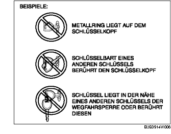

VORWORT [WEGFAHRSPERRE]
B3E090201077W01
• Die Störungsdiagnose wird automatisch durchgeführt, wenn die Zündung von LOCK (ACC) nach ON (START) gedreht wird.
• Wenn die Störungsdiagnose eine Störung anzeigt, zeigt die Wegfahrsperren-Kontrollleuchte einen DTC an und das PCM speichert den Störungscode. Im PCM gespeicherte Störungscodes können mit einem WDS-Diagnosegerät o.Ä. geprüft werden.
• Störungscodes der Wegfahrsperre, die im PCM gespeichert werden, werden gelöscht, wenn die Zündung von Stellung ON auf LOCK (ACC) gedreht wird.
• Es gibt bestimmte Störungscodes, die nur mit Hilfe des WDS o.Ä. und nicht mit der Wegfahrsperren-Kontrollleuchte ausgelesen werden können.
• Die PID/Datenüberwachungsfunktion kann verwendet werden, um die Anzahl der für ein Fahrzeug registrierten Schlüssel festzustellen.
• Wenn keine Störungscodes angezeigt werden, obwohl der Motor nicht anspringt, die folgende Fehlersuche durchführen:
-
- NR. 3 ANLASSER DREHT MOTOR NICHT [ZJ, Z6]
-
- NR. 3 ANLASSER DREHT MOTOR NICHT [LF]
-
Achtung
-
• Stets auch dann das WDS o.Ä. verwenden, um die Störungscodes zu prüfen, wenn die Störungscodes durch die Wegfahrsperren-Kontrollleuchte angezeigt werden. Wenn die Wegfahrsperren-Kontrollleuchte selbst eine Fehlfunktion aufweist, ist es möglich, dass ein DTC nicht korrekt angezeigt wird.
-
• Stets das WDS o.Ä. zur Prüfung der Störungscodes verwenden, da es bestimmte Störungscodes gibt, die nicht über die Wegfahrsperren-Kontrollleuchte ausgelesen werden können.
-
• Wenn einer der folgenden Gegenstände den Schlüsselkopf berührt oder sich in dessen Nähe befindet, wird die Signalkommunikation zwischen Schlüssel und Fahrzeug negativ beeinflusst, was dazu führt, dass das Fahrzeug nicht startet. Den Motor nicht starten, wenn sich einer der folgenden Gegenstände in der Nähe des Schlüsselkopfes befindet oder diesen berührt.
-
- Metallische Gegenstände aller Art
-
- Ersatzschlüssel oder Schlüssel für andere Fahrzeuge mit Wegfahrsperre
-
- Elektronische Geräte aller Art oder Kredit-, Bank- oder andere Karten mit Magnetstreifen

-
Hinweis
-
• Wenn als Ergebnis der Störungsdiagnose mehrere Abweichungen festgestellt werden, wird nur der DTC mit der niedrigsten Nummer von der Wegfahrsperren-Kontrollleuchte angezeigt. Das PCM speichert mehrere Störungscodes gleichzeitig.
-
• Wenn zwei oder mehr Wegfahrsperren-Störungscodes festgestellt werden, zuerst das Bauteil reparieren, dessen DTC von der Wegfahrsperren-Kontrollleuchte angezeigt wird. Nach der Reparatur eines Bauteils, die Zündung von LOCK auf ON drehen und die Störungsdiagnose der Wegfahrsperre durchführen.